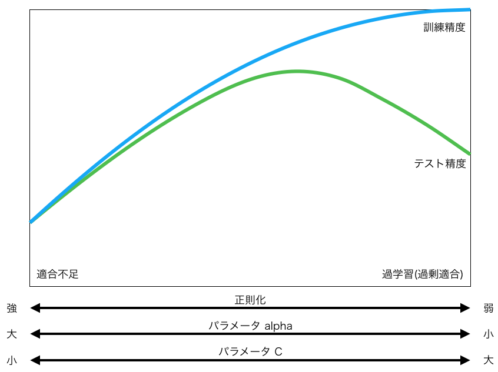

<!doctype html>
<html>
<head>
  <meta charset="utf-8">

  <title>Pythonではじめる機械学習 線形モデル</title>
  <meta name="description" content="Pythonではじめる機械学習 線形モデル">

  <meta name="viewport" content="width=device-width, initial-scale=1.0, maximum-scale=1.0, user-scalable=no">
  <meta name="author" content="nownabe">

  <link rel="stylesheet" href="css/reveal.min.css">
  <link rel="stylesheet" href="css/theme/white.css" id="theme">

  <!-- Theme used for syntax highlighting of code -->
  <link rel="stylesheet" href="lib/css/zenburn.css">

  <script>
		const link = document.createElement("link");
		link.rel = "stylesheet";
		link.type = "text/css";
		link.href = window.location.search.match(/print-pdf/gi) ? "css/print/pdf.css" : "css/print/paper.css";
		document.getElementsByTagName("head")[0].appendChild(link);
	</script>

  <!--[if lt IE 9]>
  <script src="lib/js/html5shiv.js"></script>
  <![endif]-->
</head>
<body>
<div class="reveal">
<div class="slides">

  <section data-markdown>
    <script type="text/template">
# Pythonではじめる機械学習
## 線形モデル

2017/11/02
@nownabe
    </script>
  </section>

  <section data-markdown>
    <script type="text/template">
# 範囲

* 2章 教師あり学習
* p.46-68
* 2.3.3 線形モデル
  * 2.3.3.1 線形モデルによる回帰
  * 2.3.3.2 線形回帰(通常最小二乗法) 
  * 2.3.3.3 リッジ回帰
  * 2.3.3.4 Lasso
  * 2.3.3.5 クラス分類のための線形モデル
  * 2.3.3.6 線形モデルによる他クラス分類

    </script>
  </section>

  <section data-markdown>
    <script type="text/template">
# 線形モデル
* 教師あり機械学習アルゴリズムの1つ
* 特徴量の線形関数を使って予測する
* $\hat{y}=\boldsymbol{w}^T\boldsymbol{x}+b$
* $\boldsymbol{w}$を学習する
* 過学習を防ぐため$\boldsymbol{w}$の学習に**正則化**を用いる
    </script>
  </section>

  <section data-markdown>
    <script type="text/template">
# 線形モデルの特徴
* 高次元な(特徴量が多い)データに対して有効
  * 特にデータ量よりも次元数の方が多い場合
* 学習も予測も高速
* 非常に大きなデータセットや疎なデータにも有効
* **特徴量ごとに係数が設定されるのでわかりやすい**
    </script>
  </section>

  <section data-markdown>
    <script type="text/template">
# 正則化
* 線形モデルは高次元のデータに対して過学習しやすい
* 過学習を防ぐため$\boldsymbol{w}$に正則化という制約を設ける
* $\boldsymbol{w}$を0に近づける
* うまく予測しつつ、個々の特徴量の出力への影響を抑える

## L1正則化
* $\boldsymbol{w}$のL1ノルム$||\boldsymbol{w}||_1$に制約を設ける
* マンハッタン距離
* $||\boldsymbol{w}||_1=|w_1| + |w_2| + \dots + |w_p|$
* いくつかの係数が完全に0になる
* つまり特徴量を自動で選択する

## L2正則化
* $\boldsymbol{w}$のL2ノルム$||\boldsymbol{w}||_2$に制約を設ける
* ユークリッド距離
* $||\boldsymbol{w}||_2 = \sqrt{|w_1|^2+|w_2|^2}$

    </script>
  </section>

  <section data-markdown>
    <script type="text/template">
# 正則化のパラメータ
* 線形モデルで重要なのは正則化のパラメータ


    </script>
  </section>

  <section data-markdown>
    <script type="text/template">
# チューニングのポイント
* 訓練精度とテスト精度が近く悪いとき
  * 適合不足なので正則化を弱める
* 訓練精度とテスト精度の差が大きい
  * 過学習なので正則化を強める
    </script>
  </section>

  <section data-markdown>
    <script type="text/template">
# 線形モデルの種類

## 回帰
* 線形回帰 (正則化なし)
* リッジ回帰 (L2正則化)
* Lasso (L1正則化)

## 分類
* ロジスティック回帰
* 線形SVM
    </script>
  </section>

  <section data-markdown>
    <script type="text/template">
# 回帰
## リッジ回帰
* L2正則化
* 特にデータが少ないときは、線形回帰より高性能

## Lasso
* L1正則化
* 正則化によっていくつかの特徴量が無視される
* 特徴量が多いけど重要なものはわずかというときに良い

## ElasticNet
* Lassoとリッジ回帰の組み合わせ
* 実用上は最良
* ハイパーパラメータが多い

    </script>
  </section>

  <section data-markdown>
    <script type="text/template">
# 分類
* ロジスティック回帰
* 線形SVM

## 正則化
* それぞれ正則化の方法を選べる
    </script>
  </section>

  <section data-markdown>
    <script type="text/template">
# 2値分類モデルによる多クラス分類
* 多くの線形分類モデルは2値分類しかできない
* 一般的にone-vs.-rest法で多クラス分類する
    </script>
  </section>

  <section data-markdown>
    <script type="text/template">
# SGD Classifier
* Stochastic Gradiend Descent
* 確率的勾配降下法
* SGDによってロジスティック回帰や線形SVMのパラメータを学習
    </script>
  </section>

  <section data-markdown>
    <script type="text/template">
    </script>
  </section>

</div>
</div>
<script src="lib/js/head.min.js"></script>
<script src="js/reveal.min.js"></script>
<script>
  Reveal.initialize({
    controls: true,
    progress: true,
    slideNumber: true,
    history: true,
    keyboard: true,
    overview: true,
    center: true,
    touch: true,
    embedded: window.location.search.match(/embedded/gi),

    // note / fade / slide / convex / concave / zoom
    transition: "fade",

    width: "90%",
    height: "100%",
    margin: 0,
    minScale: 1,
    maxScale: 1,

    math: {
      mathjax: "https://cdnjs.cloudflare.com/ajax/libs/mathjax/2.7.2/MathJax.js",
      config: "TeX-AMS_HTML-full",
    },

    dependencies: [
      { src: "lib/js/classList.js", condition: () => !document.body.classList },
      { src: "plugin/markdown/marked.js", condition: () => !!document.querySelector("[data-markdown]") },
      { src: "plugin/markdown/markdown.js", condition: () => !!document.querySelector("[data-markdown]") },
      { src: "plugin/highlight/highlight.js", async: true, callback: () => hljs.initHighlightingOnLoad() },

      // Alt + Click
      { src: "plugin/zoom-js/zoom.js", async: true },

      // Speaker notes (Press S key)
      { src: "plugin/notes/notes.js", async: true },

      // MathJax
      { src: "plugin/math/math.js", async: true },
    ]
  });
</script>
</body>
</html>
